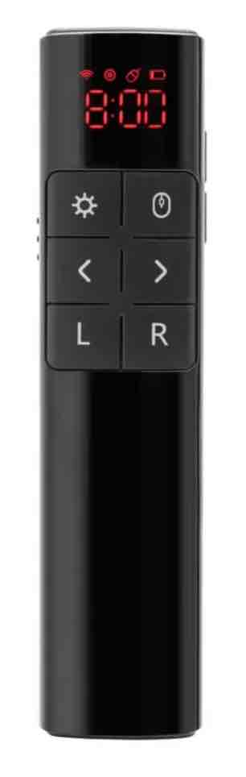

<div class="px-4 py-5 my-5 text-center">
  <div>
    <h3 class="font-weight-bold">Plexgear WL-PR1000 HAS</h3>

    <div class="col-lg-6 mx-auto">
      <a href="https://www.kjell.com/no/produkter/data/datamus/fjernkontroll-for-pc/plexgear-laser-presenter-presentasjonsverktoy-p61856">Plexgear Laser Presenter WL-PR1000</a>
      <p>Make the two buttons on the right side go left and right. (originaly it is play_or_pause and alt+f4)</p>
      <p>Usefull for Navigation in OpenLP and prezi like tools.</p>
    </div>

    
  </div>
</div>
